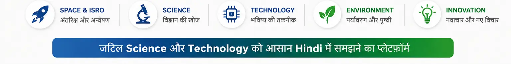
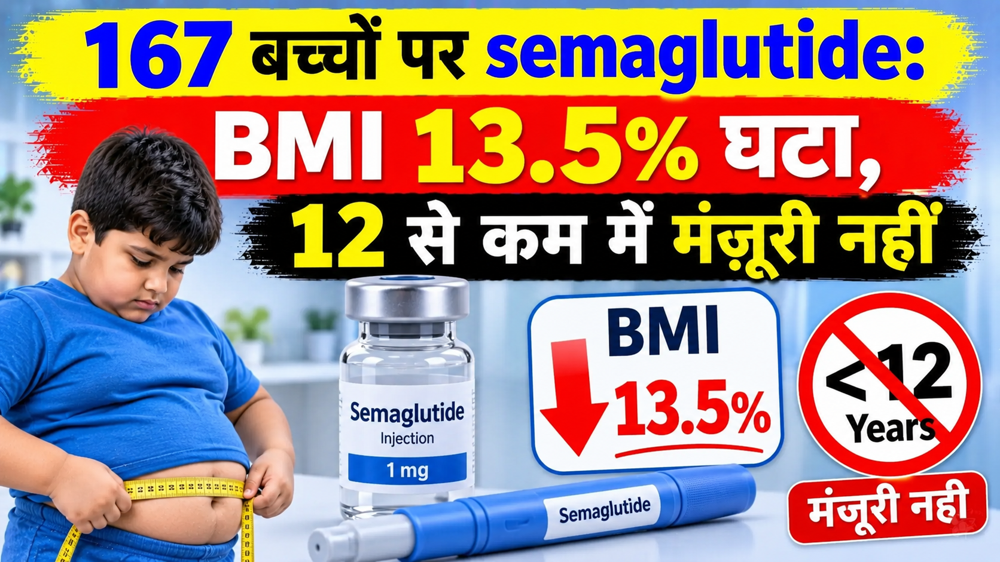
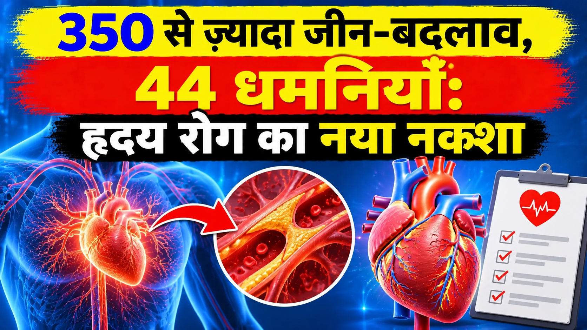
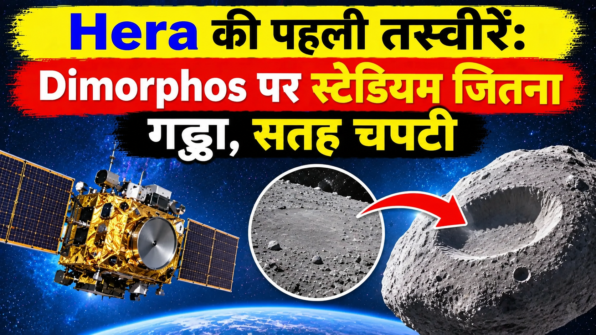
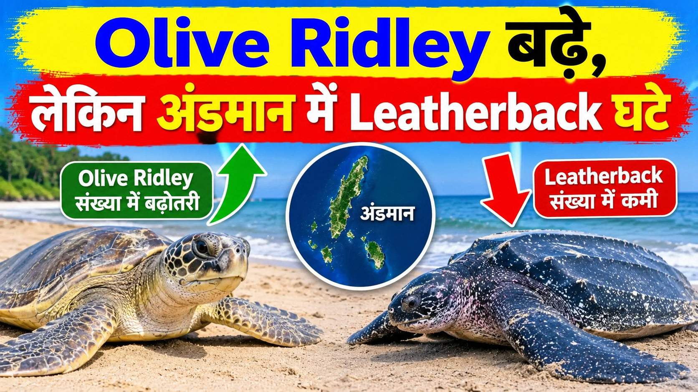
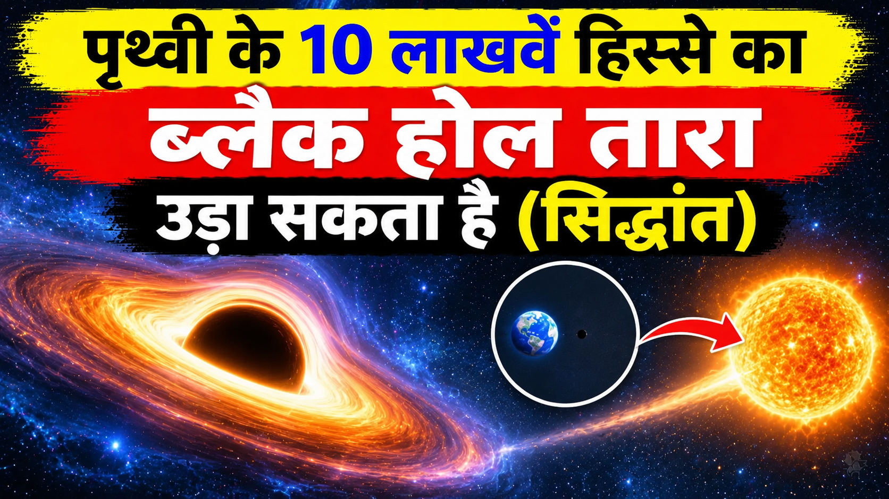

TECH RWT Discovery: Science और Technology आसान हिंदी में
TECH RWT Discovery पर विज्ञान और तकनीक की खबरें और गहरी पड़तालें आसान हिंदी में मिलती हैं. हर लेख के अंत में स्रोत दिए जाते हैं और कठिन शब्द सरल भाषा में समझाए जाते हैं. ताज़ा लेख नीचे देखिए, या सीधे किसी विषय पर जाइए: विज्ञान की खबरें, अंतरिक्ष और ISRO के लेख, टेक्नोलॉजी और Future Tech, पर्यावरण की रिपोर्ट और भारतीय इनोवेशन. पूरी सूची के लिए सभी लेख देखिए.

नवीनतम प्रकाशन (Latest Articles)

NEJM के STEP Young ट्रायल में 167 बच्चों पर semaglutide से BMI 13.5% घटा, पर यह छोटा, कंपनी-वित्तपोषित अध्ययन है. दुष्प्रभाव, WHO की सिफ़ारिश और भारत का हिसाब यहां.
पूरा लेख पढ़ें →ISRO ने Gaganyaan G1 की कोई नई तारीख़ घोषित नहीं की. फरवरी 2027 की बात नामहीन अधिकारियों वाली रिपोर्ट में है, जबकि नारायणन इसे देरी नहीं मानते. चार भ्रम और तारीख़ों की तालिका.
पूरा लेख पढ़ें →Inc42 के अनुसार जुलाई-सितंबर 2026 में भारतीय डीपटेक स्टार्टअप्स ने 28 सौदों में $290 मिलियन जुटाए. रकम 176% बढ़ी, पर इसका बड़ा हिस्सा चंद बड़े सौदों में गया.
पूरा लेख पढ़ें →BharatGen का Patram 1.5 पन्ने को तस्वीर की तरह पढ़ता है और आधार न मिलने पर चेताने को बना है. पाँच कदमों में तरीका, 83 अंक का सच और हिंदी कागज़ों पर बचा सवाल, एक जगह समझिए.
पूरा लेख पढ़ें →
WashU Medicine के Nature अध्ययन में 44 धमनी-नमूनों से 350+ जीन-बदलावों को कोशिका और जीन से जोड़ा गया. पाँच कदमों में तरीका, सीमाएँ और भारत के लिए मतलब, दवा अभी नहीं.
पूरा लेख पढ़ें →
ESA के Hera ने 25 नवंबर 2026 को Dimorphos की पहली तस्वीरें दीं: DART वाली सतह चपटी, गड्ढा पूरी चौड़ाई तक, चाल बेतरतीब. 2022 बनाम अब की तालिका और भारत का पहलू.
पूरा लेख पढ़ें →Sarvam-105B-1711 ₹25 प्रति दस लाख आउटपुट टोकन पर है. रुपये को डॉलर में ठीक से बदलें तो Gemini से अंतर करीब 3.2 गुना निकलता है. बेंचमार्क, सब्सिडी और भारत का पहलू.
पूरा लेख पढ़ें →
WII की समुद्री कछुआ रिपोर्ट में Olive Ridley और Green बढ़े, पर अंडमान-निकोबार में Leatherback घटा. गलाथिया के 889 घोंसलों वाले रिकॉर्ड और बंदरगाह के सवाल के साथ पूरा हिसाब.
पूरा लेख पढ़ें →
MIT के अध्ययन (Astrophysical Journal) के अनुसार तारे में फंसा आदिकालीन ब्लैक होल उसे सेकंडों में उड़ा सकता है. गणना, दो अंत, सीमाएं और भारत की दूरबीनों का पहलू.
पूरा लेख पढ़ें →IIT कानपुर की सोलर झिल्ली ने लैब में खारे पानी से 99.5% से ज़्यादा नमक हटाया, पर यह अभी प्रोटोटाइप है. 20 लीटर रोज़ का दावा, RO से तुलना और खुले सवाल, एक जगह.
पूरा लेख पढ़ें →Shenzhou-24 में पाकिस्तान के पहले अंतरिक्ष यात्री Tiangong पहुंचे. चार भ्रम, शुक्ला की उड़ान से तुलना की तालिका, वापसी का रास्ता और Gaganyaan की ताज़ा स्थिति, एक जगह.
पूरा लेख पढ़ें →Optimizely के signup flow की खामी से 16 नवंबर 2026 को कम से कम 178 संस्थाओं की साइटों पर मालवेयर चला. Polyfill.io 2024 से तुलना, 5% बनाम 11.7% का फ़र्क़, CSP के आँकड़े और भारत के लिए मतलब.
पूरा लेख पढ़ें →